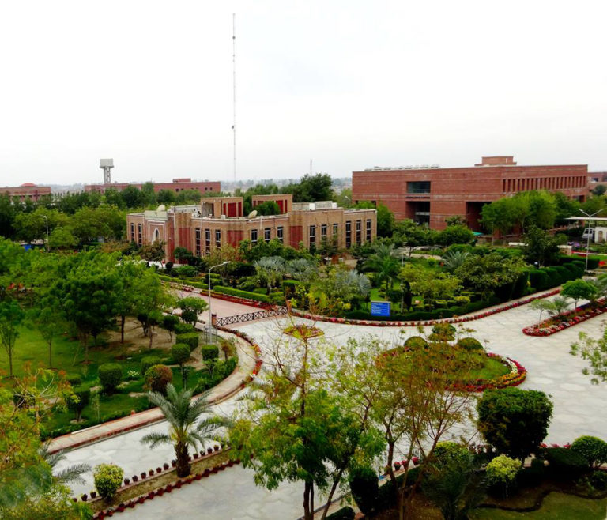
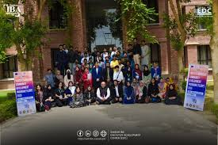

Sukkur IBA University (SIBAU) is a leading public university in Sukkur, Pakistan, known for its business education and innovative teaching, established in 1994, growing from an institute to a chartered university with strong rankings, a focus on community service, entrepreneurship, and ethical values, featuring a green campus and a wide network of community colleges.
Sukkur IBA University offers a wide range of undergraduate, graduate, and PhD programs in Business Administration, Computer Science, Engineering, Social Sciences, and Education, with specializations like Marketing, Finance, AI, Software Engineering, Applied Math, and more, plus various skill development short courses through its Executive Development Center (EDC). Key areas include BBA, BS (CS, Accounting & Finance, Economics, Social Sciences), MS (Management, Software Eng, Math), MPhil (Education), PhDs, and EDC courses (Digital Marketing, Web Dev, IELTS, etc.).
INTERMIDIATE:
Sukkur IBA University offers Intermediate (F.Sc/HSC)-level admissions for its undergraduate programs (like BBA, BE in Engineering, CS), requiring at least 50-60% marks in relevant intermediate subjects (Pre-Eng, ICS, etc.) and a qualifying score on their entry test, plus interviews, focusing on merit, quality education, and producing skilled leaders for Pakistan's development. They use a merit-based system, a rigorous entry test (English, Math, GK, IQ), and aim for industry-relevant graduates, making it a top institute in Pakistan.
DEGREE:
Sukkur IBA University offers a wide range of Bachelor's (BS/BBA/BE), Master's (MS/MBA/M.Ed), and PhD degrees, focusing on Business Administration (BBA, Agri-Business, Accounting & Finance), Computer Science & IT (CS, Software Engg, Systems Engg, Telecom), Engineering (Electrical, Renewable Energy), Education, and Mathematics, providing practical skills for leadership in various sectors.
POST GRADUATION:
Sukkur IBA University offers strong post-graduation options (MS, M.Phil, PhD) in Business, IT, Engineering (Electrical, CS, Math), and Education, focusing on rigorous research, case-based learning, and producing leaders for Pakistan's rural areas, with admissions requiring HEC-recognized degrees and entrance exams like GAT or SIBA tests, emphasizing skills in ethics, communication, and specialized domain knowledge.
OUR GLOBEL CAMPUS:
Sukkur IBA University (SIBAU) is a leading Pakistani public university, originally established as an institute in 1994 and chartered as a university in 2017, focused on providing quality, affordable education with a global outlook, especially for untapped talent in rural Sindh, offering programs from Business to Education, and known for its merit-based system, vibrant campus life, and strong emphasis on innovation, research, and community service. It's a separate entity from IBA Karachi, aiming to produce ethical leaders with analytical skills and a global perspective, recognized by HEC and THE for its academic excellence and green initiatives.

SUKKUR IBA
KINDKOT

KHAIRPUR
OUR FACILITIES:
Sukkur IBA University offers comprehensive facilities, including modern hostels with high-speed internet, dedicated libraries (Knowledge Center) with vast e-resources, specialized labs (AI, Robotics, Trading), cafeterias/tuck shops, free medical clinics, and extensive sports facilities (gym, grounds). The campus boasts green spaces, vibrant student life with various clubs, and dedicated centers like the Fabrication Lab (Fab Lab) for innovation, all designed to support academic and extracurricular growth.
IBA CLASS LIBRARY:
The IBA Library refers to the library at the Institute of Business Administration (IBA), with major branches in Karachi and Sukkur (Sukkur IBA University), providing extensive physical and digital resources, including print books, e-books, e-journals, and databases, alongside modern study spaces, collaborative areas, and research support for students and faculty, focusing on business and management studies.
IBA GAMES:
The IBA Library refers to the library at the Institute of Business Administration (IBA), with major branches in Karachi and Sukkur (Sukkur IBA University), providing extensive physical and digital resources, including print books, e-books, e-journals, and databases, alongside modern study spaces, collaborative areas, and research support for students and faculty, focusing on business and management studies.
IBA CAFTERIA:
The IBA Library refers to the library at the Institute of Business Administration (IBA), with major branches in Karachi and Sukkur (Sukkur IBA University), providing extensive physical and digital resources, including print books, e-books, e-journals, and databases, alongside modern study spaces, collaborative areas, and research support for students and faculty, focusing on business and management studies.
What Our Students Says!
Students at Sukkur IBA University (SIBAU) generally express positive experiences, highlighting practical learning, supportive instructors, strong industry connections (like PITP), and opportunities for skill development through societies and events, though they also focus on rigorous academics, maintaining high GPAs, and navigating university policies like attendance, with many achieving distinction and preparing for real-world careers in tech, business, and research.
Mr. Nisar Ahmed Siddiqui became the Director (Vice Chancellor) of Sukkur Institute of Business Administration in 2004, after gaining wide experience in Management, Administration, and Academia at national and international levels.
Late Nisar Ahmed Siddiqui
Vice Chancellor, Sukkur IBA University, Prof. Dr. Asif Ahmed Shaikh, represented the University as a distinguished panelist at the 18th Aalimi Urdu Conference, held from 25th to 28th December 2025 at the Arts Council of Pakistan, Karachi.
Prof. Dr. Asif Ahmed Shaikh
Enroll For Our Vartious Online Courses Anywhere From the sukkur IBA Universty
Sukkur IBA University (SIBAU) is a leading public university in Sukkur, Pakistan, established in 1994 to provide quality, affordable business and tech education with a focus on ethical values, innovation, and community service, aiming to develop globally competitive graduates with strong analytical and leadership skills through merit-based admissions and recognized accreditations. It's known for being among Pakistan's top business schools, offering various programs and aiming for international recognition, with a mission to serve society through excellent teaching and applied research.